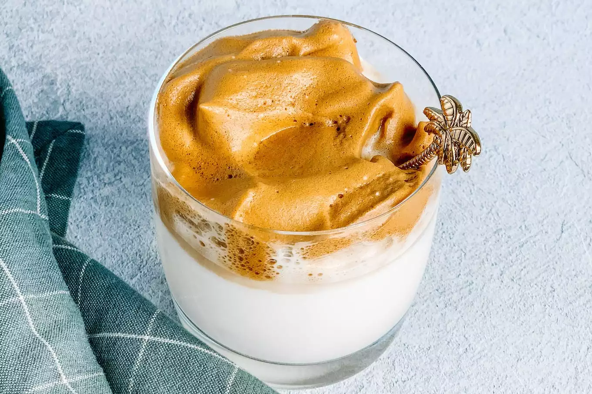

dalgona koffie

Ingredienten
- 2 el oploskoffie
- 1 glas melk
- 2 el suiker
- 2 el water
- ijsklontjes
Bereiding
- Doe de suiker, de koffie en jet water in een mongbeker
- Klop met een mixer in ongeveer 5 minuten het koffiemengsel stijf
- Doe nu melk in een glas en doe daar wat ijsklontjes bij
- Schep in dat glas het romige koffiemengsel bovenop
- roer het koffiemengsel goed door de melk en serveer meteen